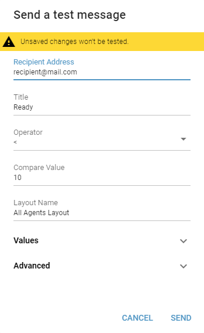
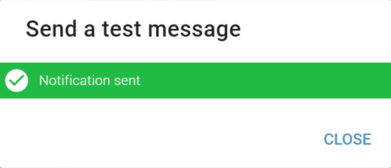

Message Templates¶
Message Template is a predefined content of a notification message.
- Name
Required
The name of a message template.
- Subject
A subject of the notification message. Subject is often used in channel notification popups instead of whole text.
Placeholders can be used in message subject which will be replaced with corresponding value or text at the time of the notification.
List of all placeholders is available here.
- Body
Required
Content of a message template.
Placeholders can be used in message body which will be replaced with corresponding value or text at the time of the notification.
List of all placeholders is available here.
Format of a body is specific to each notification channel type and is documented in corresponding subchapter in Notification Channel Types chapter.
Testing Message Template
Message Template can be tested by clicking button. Some notification placeholders are being generated from items which are not available during test. These placeholders are displayed and editable in opened dialog with meaningful prefilled values. Only Recipient Address must be provided. For description of each placeholder see Placeholders chapter.
Figure 1: Message Template testing dialog
After sending a test message, a notification dialog will appear.
Figure 2: Notification dialog
{kind=link}